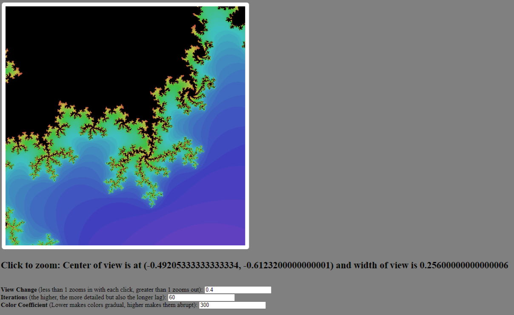

Alex Montello | Programming Projects
Kinematic Pathfinder
- Pathfinding algorithm for many objects simultaneously
- Modified A* algorithm to go from starting position and velocity to ending position with zero velocity in the shortest amount of time
- Chooses paths prioritizing smaller sums of current time(from start to current node) and optimal remaining time(calculated with a piecewise function derived from kinematics), as well as preferring paths not predicted to collide with existing paths
- Adjustable constraints for how close objects may come to each other, maximum magnitude of acceleration, and disallowed positions
- Priority given to paths calculated first
- Generates paths in discrete steps of adjustable size
- Made in Unity with C#, but no logic depends on the actual 3D simulation's physics or geometry
Assignment Grading Tool
- Made with HTML, CSS, JavaScript (React), and Python with a team (I worked on both frontend and backend)
- Evaluates large numbers of student essays using a LLM based on customizable categories from a rubric editable by the user
- OpenAI's GPT3.5 model was used to analyze the essays
- Prompt engineering and trial/error was used to get reliable, structured outputs out of the AI completions
- Scores for each rubric category as well as comments about areas of improvement are labeled with student information and compiled into a table
- The table can be exported to a Google Sheets document automatically
Sphere Localizer
- Uses OpenCV and Python in a Jupyter Notebook to process frames at 10fps
- Hough circle transform used to detect a green sphere of known size and calculate its radius in pixels
- Angles are calculated from detections' positions in the frame are calculated using the focal length of the camera and the distance away is calculated from the radius of the sphere
- Position estimations are accurate within roughly 30mm as long as the sphere is within about 5m from the camera lens
- 3D position data is saved to estimate the path of a projectile sphere with a quadratic bezier curve
Mandelbrot Set

- This uses HTML and JavaScript in Replit
- Pixels on a canvas element correspond to the complex plane with the real parts of numbers being horizontal
- The Mandelbrot Set fractal is displayed as black on a colorful background, where the color represents the amount of iterations of the recursive equation Z²+c until the value is estimated to diverge
- Zooms into/out of where the user clicks by an adjustable factor
- Can distinguish pixels approximately 10-16 apart
AI Worksheet Completer
- Uses edge detection and contours to form a quadrilateral of interest to a piece of paper detected in the frame
- OCR used to detect questions mostly accurately
- OpenAI's GPT3.5 model answers the questions concisely and the responses are added under the respective question
- After answers are added, the quadrilateral of interest, including the annotated answers, is warped back to its orientation in the original frame
- Made in Jupyter Notebook with Python and the libraries OpenCV, OpenAI, numpy, and pytesseract
This Portfolio
- You're looking at it
- Made with HTML and CSS only
- All media is made by me
Vision Assist

- Made with Python, JavaScript (React), HTML, and CSS with a team of students (I contribued to the backend)
- Uses an AI trained from hand-labeled data of common furniture items as well as a model pre-trained on the COCO dataset
- Approximately 2 frames from a device camera processed per second, passing through MiDAS depth estimation and the two AI models to analyze surroundings
- Depending on the mode, emits audible feedback through text-to-speech describing potential hazards, or alternatively vibrates the device with a frequency representing the direction to adjust in order to avoid obstacles
- Integrated into a website with HTML and CSS, as well as an app using Dart in Flutter (not downloadable)
Restaurant Decision Maker
- Randomly picks a restaurant from a large list of options in Cincinnati
- Category options allow users to choose which types of food they are looking for
- Outputs an adjustable number of options with either some of the chosen categories or exclusively from the chosen categories
- Made in Replit with HTML, CSS, and JavaScript
FTC Scouting Tool
- Uses HTML, CSS, and JavaScript in Replit
- Tracks POWERPLAY robots' capabilities in significant detail
- Game timer and score tracking states(autonomous, driver-controlled, and endgame) consistent with matches
- Data compiled in a spreadsheet transferrable to Google Sheets
NYT Game Solver
- Made in Code.org with JavaScript and included databases of words
- Computes solutions or optimal guesses for Wordle, Spelling Bee, Letter Boxed, and Sudoku
- Wordle solution uses brute force, like Spelling Bee and Letter Boxed, to narrow down solutions and information theory to suggest guesses optimally
- Sudoku solver uses a recursive backtracking method
- Five pages, navigable with buttons, each with various user inputs
Asteroid Hazard Predictor
- Trains and tests on a dataset of 840000 asteroids from NASA from Kaggle
- Data thoroughly analyzed using matplotlib and pandas
- SMOTE used to oversample hazardous asteroids, balancing the training data
- Bagging classifiers, random forest classifiers, and decision trees were tested, all with accuracy above 99.95%
- All work done from a Python notebook; results compiled into a poster
Solar System Simulation
- Uses ephemeris and planet data from JPL and NASA
- Eulers method used to define and test trajectories through the solar system or simulate the motion of a spacecraft
- Created a mission from Earth to Neptune's eccentric moon, Nereid
- Adjustable scalars for time, planet sizes, Sun size, and viewing region size
- Made with C# in Unity